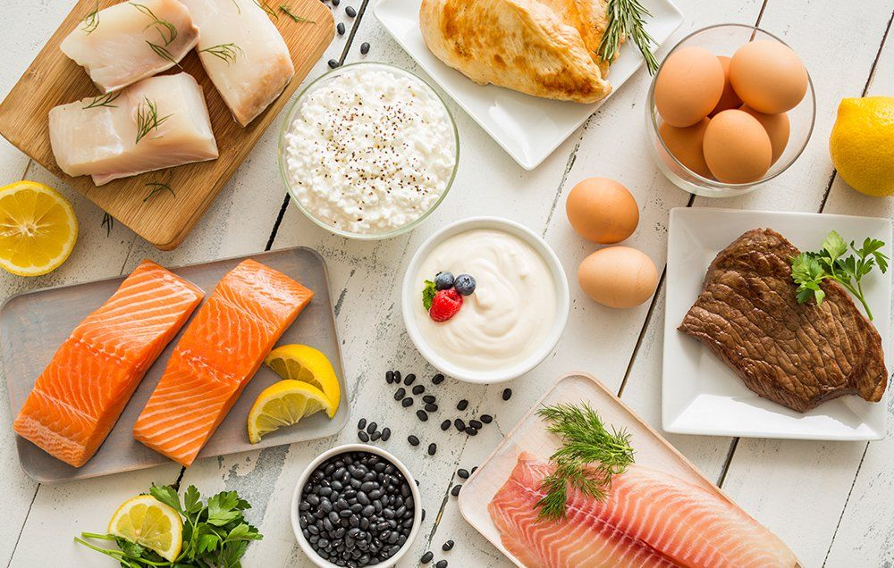
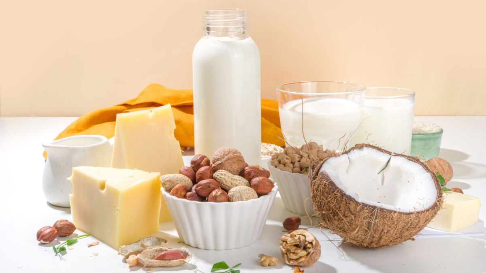

Healthy
Harvest
Home page
Gallery
Store
team
Site Map
"From Farm to Fork: Celebrating Freshness and Flavor"
Font Size:
Small
Medium
Large
Background Color:
Default
Yellow
Grey
Light Blue
Fruits
Vegetables
Whole Grains

Lean Proteins
Nuts & Seeds

Dairy or Dairy Alternatives
Healthy
Harvest
Quick Links
Shop Now
Image Gallery
Content Article Page
Feed Back
More
Sitemap
Student Details
Content Artical Page
Page Editor Details
Contact Us
Address: No.18/1,old Quarry road,Mount Lavinia Sri Lanka.
Email: info@healthyharvest.lk
Phone: +94 765983645
X

![Vegetables are nutrient-dense foods derived from plants, typically consumed as part of a balanced diet. They are rich in essential vitamins, minerals, and dietary fiber, which are crucial for maintaining overall health and well-being. Including a variety of colorful vegetables in your diet can help support immune function, aid in digestion, and reduce the risk of chronic diseases such as heart disease and certain cancers. Incorporating vegetables into meals in various forms, such as raw, steamed, or roasted, ensures a diverse intake of nutrients and promotes overall dietary balance.](1images/vegetables.jpg "Image 2")